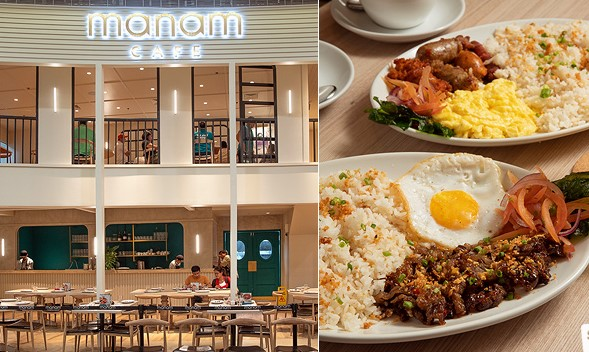
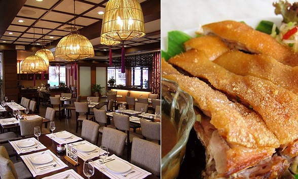
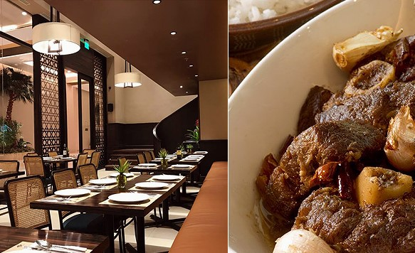

"Tinatamad Magluto? No Problem! We Got You!"
Below are Restaurants that serves Filipino Cuisines.

The Manam Restaurant.The offshoot of Manam serves the same Filipino fare you’ve come to know and love—but they’ve
also got Pinoy desserts to indulge in after a hearty meal. They also serve all-day breakfast, so you can
have your fill of Ube Champorado (P155) any time of the day. After polishing off plates of your Manam faves
like the House Crispy Sisig (get it as a silog for P265) or the newer Pork Belly Bicol Express
(P205/small, P360/medium, P645/large).
Click here for Directions

The MilkyWay Restaurant. The restaurant created by Chef J. Gamboa of Cirkulo had its beginnings as
a dairy bar in Old San Miguel in the 1950s. Since then, they’ve become a reliable go-to for Kapampangan dishes, whether
you’re there for merienda of Dinuguan at Puto (P295) or any of the all-time favorite versions of Sinigang (P395-P595).
And who can resist the MilkyWay Halo-Halo (P255), a consistent winner on our top 10 lists with the perfect balance between
the toppings and its milky ice?
Click here for Directions

The Abe Restaurant. The place “where good friends dine” is dedicated to Larry Cruz’s father, writer and
artist E. Aguilar “Abe” Cruz. They serve Filipino food, focusing on Kapampangan favorites and gourmet fare inspired by the
younger Cruz’s travels. The menu reads like a storybook, with a section filled with artists' and writers’ fave dishes.
Order the Lamb Adobo with Popped Garlic (P545), Binukadkad na Crispy Pla-Pla (P425), and Paco Fern and Tomato Salad (P185).
Click here for Directions